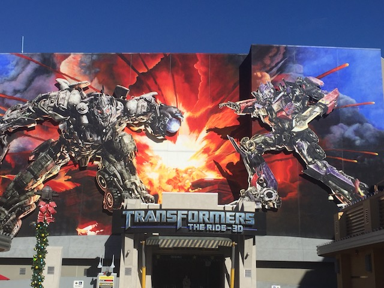
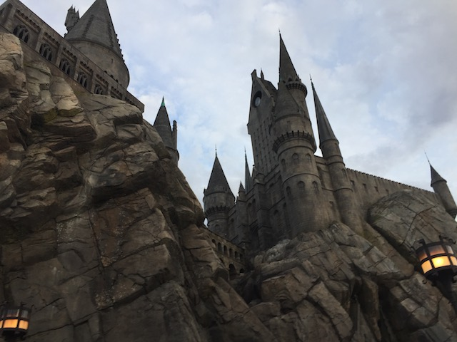
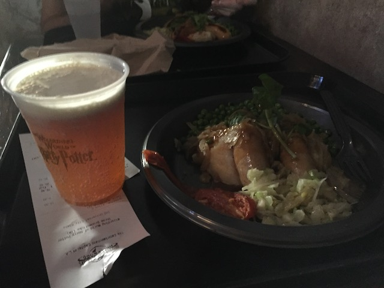

| |
Universal Studios Hollywood Review

Universal Studios Hollywood is definetly one of the more interesting theme parks out there and my views on the park are pretty mixed. There's a lot about Universal Studios Hollywood that I really like and enjoy, but at the same time, there's also a lot to the park that I really feel that they need to improve. If you're into movies, then Universal Studios Hollywood is fantastic. All of the rides are themed to movies, the shows are themed to movies, and then of course, there's the tram tour, which is really f*cking awesome. And since I'm a big fan of films, there's a lot to appeal to me. But like I said, all the rides are themed to movies. But when exclude motion simulators and 3D Shows (even the amazing ones that use Spiderman technology), suddenly there are only four rides in the entire park. Only two!!! A water ride, an indoor coaster, a Roller Skater, and a kiddy ride. They're fun and all, but yeah. The vast majority of rides here are simulators of some kind. Now some of these are the best types of simulators that you can think of that use the Spiderman Technology as well as the Robot Arm technology. But yeah, the fact that there's only three (technically 4, but who gives a crap about the Silly Swirly?). Sorry, but that's kind of a problem with me. I know that I'm a big movie fan and I really enjoy the atmosphere of Universal Studios Hollywood. And I will admit that I really enjoyed a lot of the rides, particuarly the simulators (Transformers is freaking awesome!). I like the atmosphere and the theme a lot. I just wish they had one more big attraction. But most people just know it for the shows and tram tour and the park knows that they don't need to build nearly as many rides since they can just cash in on that. And this isn't even taking into consideration noise complaints due to the studio being there. But that seems to be slowly changing though. So if you're a mega movie fan, you're probably gonna love Universal Studios Hollywood and enjoy all the shows and the tram tours. If you're a roller coaster enthusiast, there are better places that you can visit.
Rollercoasters
There is a link to a review of all the Rollercoasters at Universal Studios Hollywood.
Top Coasters
Revenge of the Mummy Review

Kiddy Coasters
Flight of the Hippogriff Review

Flat Rides
Universal Studios Hollywood only has flat ride. Silly Swirly in the Despicable Me area, which is basically just like Dumbo, only themed to Minions.
 It's Dumbo. Only far more obnoxious.
It's Dumbo. Only far more obnoxious.
Dark Rides
Well considering that we currently count 3D Shows and Simulators as dark rides on Incrediblecoasters, then Universal Studios Hollywood is DRIPPING with dark rides. It is chock full of them. Let's start out with what is by far, my favorite ride in the park. Transformers. This ride uses the Spiderman Technology. So yeah. It may not be quite as good as Spiderman, but you know it's going to be good. Throughout the ride, you join Optimus Prime in fighting against Megatron. You fight around, see explosions, deal with Megatron, all that fun stuff. Megatron throws a fire bomb at us, and yeah. It's pretty damn realistic. They do have real fire effects on this ride. There's a big chase, and of course, they have you fall, just like on Spiderman. Because that effect is awesome. And Transformers, while not as good, it's still really freaking good. And of course, we have to talk about their other high tech 3D Simulator sort of ride. Forbidden Journey in the Wizarding World of Harry Potter. Now this ride uses the Robot Arm technology. And while it's a bit of a bummer that you don't go crazy like you do on the Robot Arms, it's still really cool. You're taken to Hogwarts, fly in the Quidditch Match, fight off dementors and those attack trees from the Forest. And you save Hogwarts and they cheer you, meer muggles. Another really fun simulator. I really hope that another ride is built with the Robot Arm technology and they do make it go crazy, cause I think there can truly be something great done with this technology. And then of course, there's the Simpsons Simulator Ride. Not only is it a very fun story (big fan of the Simpsons), but they also do a really good job at actually making it seem realistic. It definetly feels more realistic than say Star Tours. There's also the Despicable Me simulator. Hey! Do you like minions!? What? No? They annoy you!? Well too bad because this ride is chock full of them. But it's still a good simulator, even if the characters they theme it after are obnoxious. Then we have Shrek 4D Show as well, which I'm not a mega fan of. While the show wasn't nearly as good as watching the first two Shrek Movies, it still beats and isn't nearly as stupid as Shrek 3 & 4. So yeah. The dark ride collection here is great, considering they have Transformers and Forbidden Journey.

No. You don't see robot balls on this ride.

More Robot Arm simulators please.
Water Rides
There is only one water ride at Universal Studios Hollywood. Yeah. You know what it is. =) Of course!!!! Its Jurrasic Park!!!! Yeah, I know its not nearly as good as everyone claims it is nor is the drop that big, its still a very fun shoot the chutes ride. It has a good theme, the drop may be small, but its fun. And it did make our Top 10 Water Rides List, so that does say something about the ride. Definetly give it a ride while at Universal Studios Hollywood.
 Great themed shoot the chutes ride. Give it a spin.
Great themed shoot the chutes ride. Give it a spin.
Dining
While Universal Studios Hollywood may not be one of the greatest parks ever for dining, they did seem to have a food selection that definetly went above and beyond. I know that I had to try the food at the Wizarding World of Harry Potter. It's primarily just British Food, which is certainly different. Oh, and Butterbeer. Hope you like butterscotch cause that's what it tastes like, and the foam is by far the best part. So yeah. They do have a lot of options at Universal Studios Hollywood as far as dining goes.

Where else can you get wizard food? =P
Theming and Other Attractions
Here are the reviews of all the other stuff at Universal Studios Hollywood. The theming is very good. You really do feel like you're on a movie set, and the whole park just seems like a great place to relax. I love its hillside setting. Its just in a really really nice location. And as for other stuff to do, yeah. They have stuff. Well first off, they have lots of shows. I know they recently got rid some of their better shows, but hey. Maybe they replaced it with some other stuff. They sometimes have a Laika Exhibit. I know it's only for a limited time, but I hope it comes back by popular demand for a second time because it really is awesome. And then again, they have the tram tour. This is the holy grail of the park. The one thing that makes the park world famous. And it is the best thing to do in the park. Its freaking awesome to be on that tram. You do see all sorts of cool stuff from movies and the King Kong section that they just added is really a whole lot of fun. I really really enjoyed it. DEFINETLY do this at Universal Studios Hollywood. I mean, its the freaking star attraction of the park!!!!
Who the hell goes to Universal Studios Hollywood and doesn't do the tram tour?
In Conclusion
Universal Studios Hollywood is very different from most other theme parks in the sense that its really not so much about rides here as it is about the tram tour and seeing all of these movies. While it may be lacking in rides, lagging behind the Universal Orlando Resort, Universal Studios Japan, and Universal Studios Singapore, it does have the Tram Tour, which is seriously freaking amazing as well as some very good shows and some of the best simulators. The best way for me to describe Universal Studios Hollywood is that its a one time park. Its really a lot of fun the first time, but once you see everything, you've seen everything. Its not like Disneyland where you can always go back. It does get old, even at the end of the same day, you'll say "Seen it". It definetly needs a Dueling Dragons, or a Hollywood Dream, or a Battlestar Galactica to compete with the other parks. But hey. They've been expanding and if it keeps up, I could possibly get what I want. =) But if you've never been before at all, DEFINETLY go. Its worth at least one visit. I mean, you have to try a ride with Spiderman technology at least once.
Enthusiast FAQs.
*Are there kiddy coaster restrictions? - Nope. You can ride Flight of the Hippogriff.

Tips
*Definetly make sure to do the Tram Tour.
*If you want to save some time, take the stairs since the escelators can get very crowded.
*Do all the Potter stuff early. That gets pretty damn crowded.
*The rides in the lower lot open later than the rides in the upper lot.
*Take advantage of the single rider lines.
*Have Fun!!!!
Theme Park Category:
Theme Parks
Location
Universal City, California, USA
Last Day Visited
September 23, 2021
Video
I have yet to make a video for Universal Studios Hollywood. I'll have to do that soon.
Complete Update List
2017
Universal Studios Hollywood 2017
2011
Universal Studios Hollywood 2011
Here's a link to the parks website.
Home
|